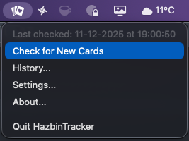
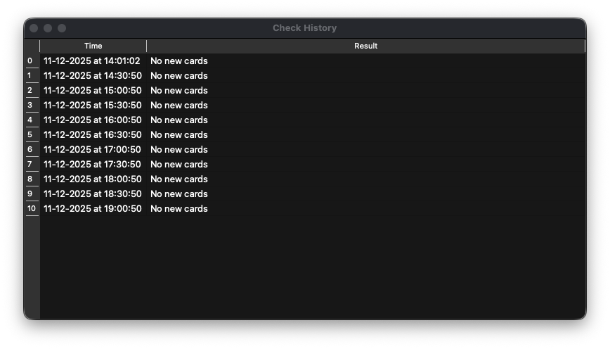

User Guide
Installation
Only macOS is supported.
- Download
HazbinTracker-<version>-macos-<arch>.zipfrom the latest release. - Unzip it and move
HazbinTracker.appto your Applications folder. - Launch it. If macOS refuses to open the app because it is from an unidentified developer, right click it and choose Open.
The app has no Dock icon and no window. It lives in the menu bar, and only one copy runs at a time.
The tray menu
Once the app is running this icon appears in the menu bar:

Clicking it opens a menu with:
- Last checked: when the last check ran.
- Check for New Cards: run a check now. A manual check tells you when it found nothing or failed.
- History...: the results of previous checks.
- Settings...: the settings editor, see Settings.
- About...
- Quit
Checks also run in the background, by default every 60 minutes. When new cards are found a notification is shown, and clicking it opens the Hazbin Hotel store in your browser.
If 5 checks in a row fail (for example the store is blocking requests), the app shows a warning that new cards may be missed until the problem is resolved.
Check History
The history dialog lists the checks that ran in the background, and what each of them found.

Where the files are
Everything lives in ~/.config/HazbinTracker (or $XDG_CONFIG_HOME/HazbinTracker when that
is set):
| File | Content |
|---|---|
config.json |
Your settings, see Settings |
track_data.json |
The cards seen by the last check and the time it ran |
check_history.json |
The check history shown by the history dialog |
hazbin.log |
Application log, useful when reporting a problem |
Versions before the move to this location stored these in
~/Library/Application Support/HazbinTracker. The files are moved to the new location the
first time the app starts.